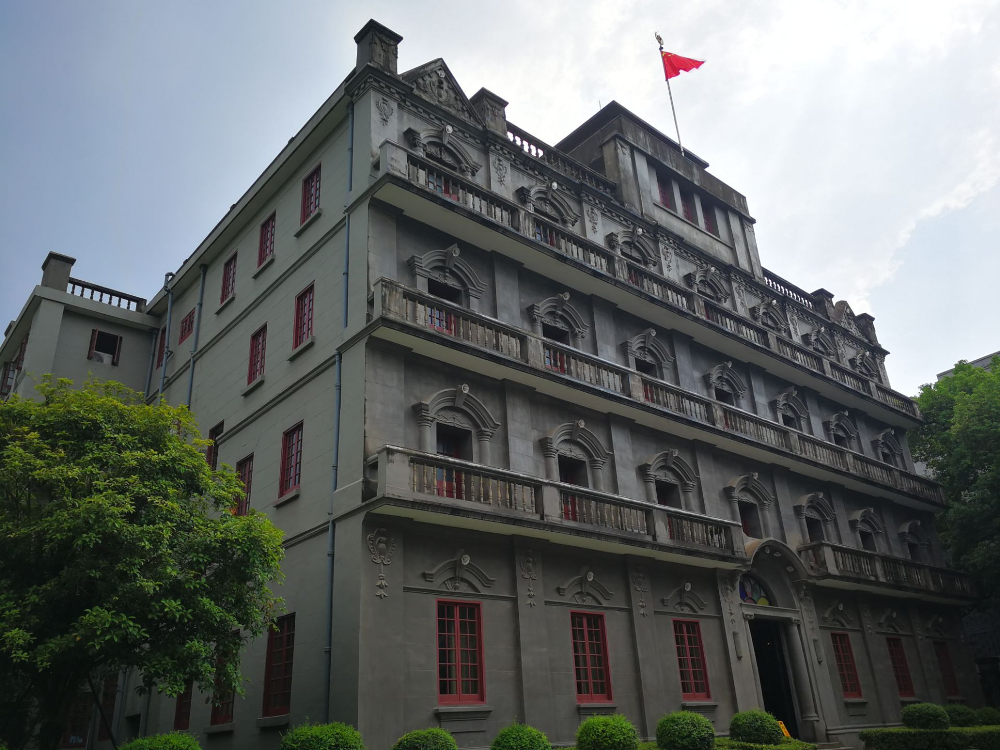

古代历史
南昌历史悠久，早在公元前201年，汉高祖刘邦就设立豫章郡，南昌成为其治所。南昌在唐朝时曾是文化、经济和政治的重要中心。
滕王阁
滕王阁始建于唐朝，是南昌最著名的古建筑之一。它因唐代文学家王勃的《滕王阁序》而闻名。
古城墙
南昌的古城墙历史可以追溯到明朝时期，是城市重要的防御工事，见证了南昌的发展与变迁。
红色历史
南昌不仅有着辉煌的古代历史，还在中国革命史上占据重要地位。1927年8月1日，南昌起义打响了武装反抗国民党的第一枪。
南昌起义
南昌起义是中国共产党领导的第一次武装起义，标志着中国共产党独立领导武装斗争的开始。

南昌八一起义纪念馆
南昌八一起义纪念馆展示了起义期间的重要文物和史料，纪念这一伟大的历史事件。